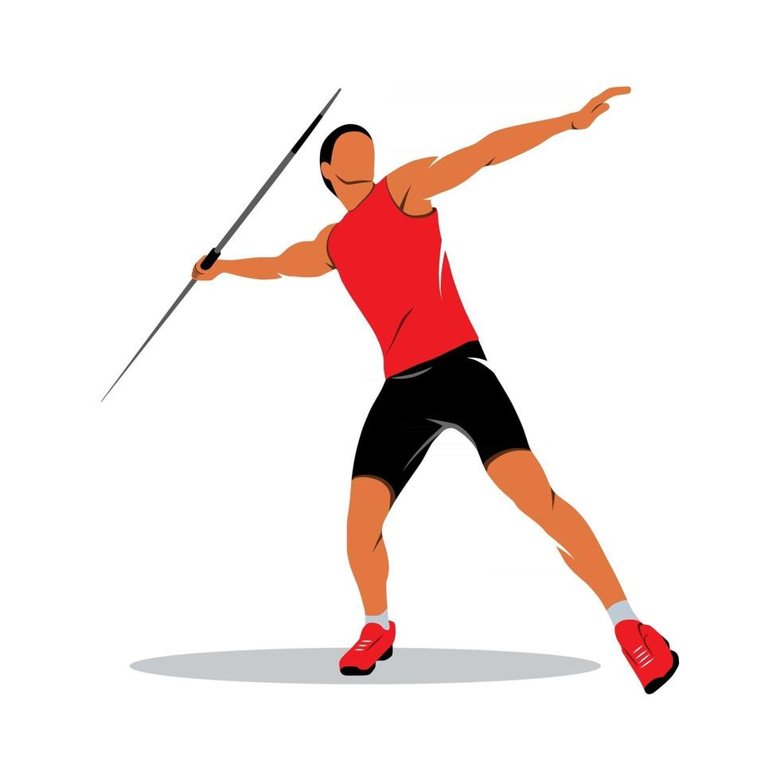

WHAT IS JAVELIN THROW?
The javelin throw is a track and field event where athletes compete to throw a spear-like object, called a javelin, as far as possible. The javelin, traditionally made of metal or composite materials, is about 2.5 meters long and weighs between 600 to 800 grams.
In the event, competitors run within a designated area, called the "throwing sector," and release the javelin overhand, using a technique that combines speed, strength, and precision. The throw is measured from the point where the javelin first touches the ground.
Success in the javelin throw requires a blend of technique, power, and timing to achieve maximum distance.